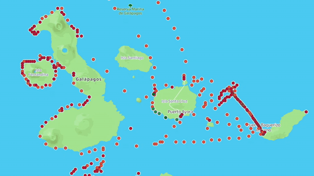
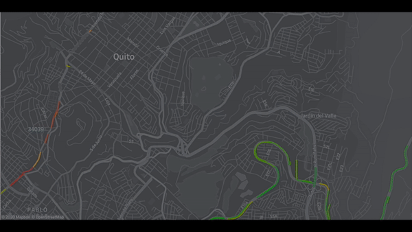

Observatory of Urban Freight Transportation
The observatory collects GPS data from urban freight transportation companies to identify common transportation patterns, transportation behavior across the city and its impact to urban life.

Public Policy Evaluation for Last Mile Deliveries (simulation)
From an extensive data collection process in highly congested zones in Guadalajara-México and Quito-Ecuador, simulation models are proposed to assess and evaluate urban delivery alternatives.

Boat transportation in the Galapagos Islands
Boat transportation in the Galapagos Islands affect marine life with emissions and leaks. GPS and planning data was used to assess boat trips between islands.

Urban Traffic Evolution Using GPS Data
Using GPS data from freight delivery companies, general city congestion can be assessed to evaluate best practices both for passenger and freight transportation.